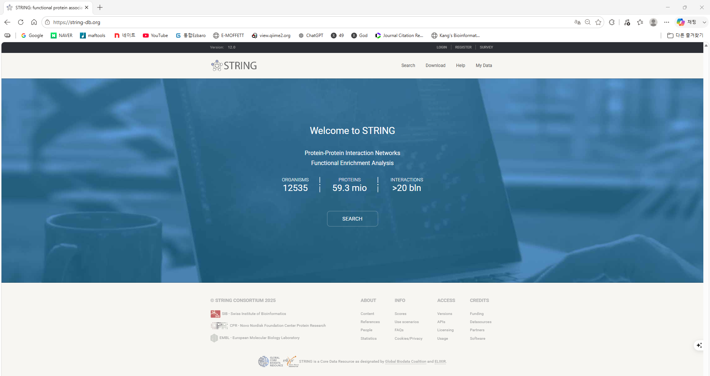
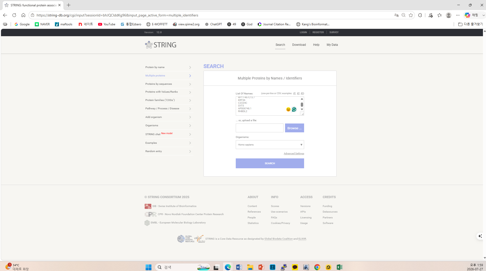
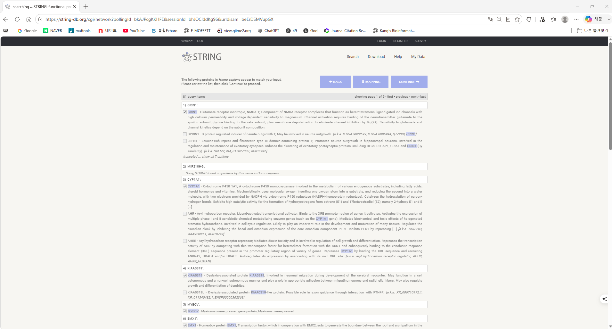
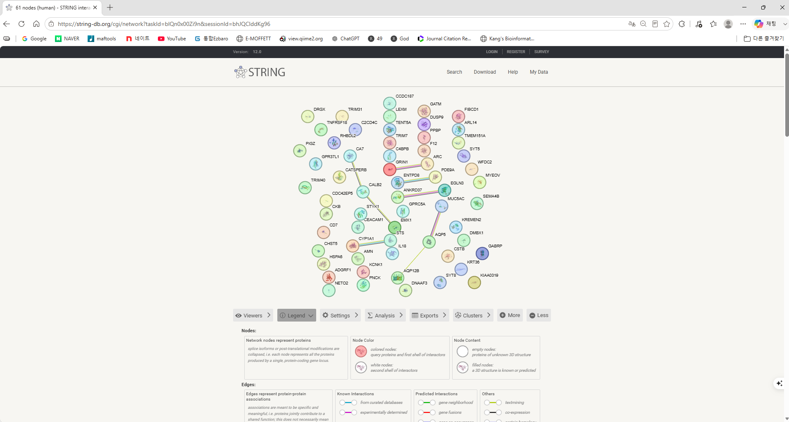

STRING은 무엇을 분석하는가?
STRING은 알려졌거나 예측된 단백질 간 연관성을 통합하여 네트워크로 보여주는 웹 기반 데이터베이스입니다. 실험 결과, curated database, co-expression, text mining 등 여러 근거를 함께 이용합니다.
입력한 유전자에 대응되는 단백질들이 서로 얼마나 연결되어 있는지 확인합니다.
입력 단백질에서 과대표현된 GO, KEGG 및 기타 기능 범주를 확인합니다.
1. STRING 홈페이지 접속
STRING 공식 홈페이지에 접속한 뒤 중앙의 SEARCH 버튼을 클릭합니다. 상단 메뉴의 Search를 선택해도 됩니다.

2. Multiple proteins 선택
여러 DEG를 동시에 분석해야 하므로 왼쪽 메뉴에서 Multiple proteins를 선택합니다.
- List Of Names에 gene symbol을 한 줄에 하나씩 붙여넣습니다.
- 파일을 직접 올리려면 Browse를 이용합니다.
- Organisms에서 사람 데이터는 Homo sapiens를 선택합니다.
- SEARCH를 클릭합니다.

| 분석 | 권장 입력 파일 |
|---|---|
| Up-regulated network | up_gene_symbols.txt |
| Down-regulated network | down_gene_symbols.txt |
3. 입력 ID와 단백질 매핑 확인
STRING은 입력한 이름을 해당 종의 단백질로 변환합니다. 유사한 이름이 여러 개 발견되면 후보가 여러 개 표시되므로 올바른 단백질을 직접 확인해야 합니다.

| 상황 | 처리 방법 |
|---|---|
| 후보가 하나만 정확하게 일치 | 기본 선택을 유지합니다. |
| 후보가 여러 개 표시 | 공식 gene symbol과 단백질 설명을 확인해 올바른 항목을 선택합니다. |
| No proteins found | 오래된 symbol, 별칭, 비암호화 RNA 또는 잘못된 taxonomy인지 확인합니다. |
| 한 gene에 여러 ID가 묶임 | ///, ; 등으로 합쳐진 annotation을 정리한 뒤 다시 입력합니다. |
MAPPING 버튼으로 매핑 정보를 확인하거나 저장하고, 검토가 끝나면 CONTINUE를 클릭합니다.
4. Protein association network 확인
매핑을 완료하면 입력 단백질로 구성된 네트워크가 나타납니다. 서로 연결되지 않은 단백질도 분석 목록에 포함될 수 있습니다.

| 요소 | 의미 |
|---|---|
| Node | 단백질을 나타냅니다. 여러 isoform은 일반적으로 하나의 protein-coding locus로 통합됩니다. |
| Edge | 두 단백질 사이의 물리적 또는 기능적 association을 나타냅니다. |
| Edge thickness | 선이 굵을수록 association에 대한 통합 confidence가 높습니다. |
| Node content | 단백질 구조 정보가 알려졌거나 예측되면 노드 내부에 구조가 표시될 수 있습니다. |
| Disconnected node | 현재 score와 조건에서 다른 입력 단백질과 연결 근거가 없는 단백질입니다. |
5. Settings에서 네트워크 조건 설정
네트워크 아래의 Settings에서 분석 조건을 조정합니다. 조건을 바꿀 때마다 결과가 달라질 수 있으므로 최종 설정을 반드시 기록합니다.
| 설정 | 설명 | 실습 권장값 |
|---|---|---|
| Network type | 기능적 association을 포함한 full network 또는 physical subnetwork 선택 | 먼저 full network |
| Meaning of network edges | 근거 유형별 색상 또는 confidence 중심 표시 | Evidence로 근거 유형 확인 |
| Minimum required interaction score | 네트워크에 포함할 association의 최소 신뢰도 | 0.400 medium 또는 0.700 high |
| Max number of interactors | 입력 목록 외에 STRING이 추가할 주변 단백질 수 | 0 |
6. PPI enrichment 해석
Analysis를 클릭하면 네트워크의 요약 통계와 PPI enrichment를 확인할 수 있습니다.
| 항목 | 해석 |
|---|---|
| Number of nodes | 네트워크에 포함된 단백질 수 |
| Number of edges | 현재 조건에서 확인된 association 수 |
| Average node degree | 단백질 하나가 평균적으로 연결된 수 |
| Expected number of edges | 같은 수의 무작위 단백질에서 기대되는 연결 수 |
| PPI enrichment P-value | 관찰된 연결이 무작위 기대보다 많은지 평가한 값 |
7. STRING Functional enrichment 확인
Analysis 화면의 functional enrichment 표에서 GO와 pathway 결과를 확인합니다. 화면 버전에 따라 범주 명칭이나 배치는 조금 달라질 수 있습니다.
- Biological Process: 입력 단백질이 관여하는 생물학적 과정
- Molecular Function: 단백질의 분자 수준 기능
- Cellular Component: 단백질이 위치하거나 작용하는 세포 구성요소
- KEGG Pathways: 신호전달·대사·질환 관련 pathway
- Reactome Pathways: 반응과 pathway 단위의 기능 정보
| 결과 열 | 의미 |
|---|---|
| Term / Description | GO term 또는 pathway 이름 |
| Observed gene count | 입력 목록에서 해당 기능에 포함된 단백질 수 |
| Background gene count | 배경 데이터에서 해당 기능에 포함된 단백질 수 |
| Strength | 관찰된 단백질 비율과 무작위 기대 비율의 차이를 나타내는 enrichment 크기 |
| False discovery rate | 다중검정을 보정한 유의확률 |
| Matching proteins | 해당 결과를 구성하는 실제 입력 단백질 |
8. Clusters와 hub protein
Clusters 메뉴를 이용하면 연결이 밀집된 하위 네트워크를 탐색할 수 있습니다. 각 cluster가 어떤 기능을 공유하는지 functional enrichment와 함께 확인합니다.
- 큰 cluster가 반드시 가장 중요한 생물학적 기능을 의미하지는 않습니다.
- Degree가 높은 단백질은 hub 후보이지만, 데이터베이스에서 많이 연구된 단백질일 가능성도 있습니다.
- Hub 선정 시 degree뿐 아니라 logFC, FDR, 발현 방향, 기능분석과 선행 문헌을 함께 확인합니다.
- Up과 Down 네트워크에서 동일한 단백질이나 기능이 반복되는지 비교합니다.
9. 결과 내려받기와 분석 기록
Exports에서 네트워크 그림과 표를 저장하고, Analysis의 enrichment 결과도 내려받습니다.
results/string/
├─ STRING_up_network.png
├─ STRING_up_interactions.tsv
├─ STRING_up_enrichment.tsv
├─ STRING_down_network.png
├─ STRING_down_interactions.tsv
├─ STRING_down_enrichment.tsv
└─ STRING_analysis_note.txtorganism: Homo sapiens
input list: Up or Down DEG
network type: full STRING network
required score: 0.400 or 0.700
additional interactors: 0
mapped / unmapped proteins:
STRING version:
analysis date:실습 문제
- Up gene 목록을 입력하고 전체 gene 수, mapping 성공 수와 mapping 실패 수를 기록하세요.
- Interaction score를 0.400과 0.700으로 변경하고 node와 edge 수가 어떻게 달라지는지 비교하세요.
- Additional interactors를 0으로 설정한 상태에서 PPI enrichment P-value를 기록하고 의미를 설명하세요.
- Functional enrichment에서 FDR이 가장 작은 GO Biological Process 5개를 정리하세요.
- KEGG 또는 Reactome에서 관심 pathway 하나를 선택하고 matching proteins를 확인하세요.
- Down gene 목록에도 같은 분석을 반복하고 Up 결과와 공통된 기능 및 서로 다른 기능을 비교하세요.
- Degree가 높은 hub 후보 3개를 선택하고, DEG 통계와 기능 결과를 근거로 후보 선정이 타당한지 설명하세요.